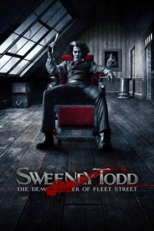

Country:United Kingdom, 116 minutes
Spoken languages:English
Genres:Drama, Horror
Director(s):Tim Burton
Writer(s):John Logan
Video Codec:Unknown
Number: 2359


Certification:R
Storyline:
The infamous story of Benjamin Barker, a.k.a Sweeney Todd, who sets up a barber shop down in London which is the basis for a sinister partnership with his fellow tenant, Mrs. Lovett. Based on the hit Broadway musical.
Cast:


Medium: Original DVD,
Loaned: No
Aspect ratio: Unknown